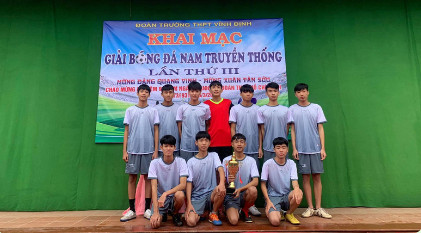

KHAI MẠC GIẢI BÓNG ĐÁ TRUYỀN THỐNG NAM LẦN THỨ 5.
Nhằm tăng cường các hoạt động hướng tới
- Kỷ niệm 133 năm ngày sinh của Chủ tịch Hồ Chí Minh (19/05/1890-19/05/2023).
- Chào mừng kỷ niệm 92 năm ngày thành lập Đoàn TNCS Hồ Chí Minh (26/3/1931-26/03/2023).
- Chào mừng kỷ niệm 48 năm đất nước hoàn toàn thống nhất (30/4/1975-30/4/2023) và kỷ niệm 116 năm ngày sinh TBT
Lê Duẫn (7/4/1907-7/4/2023).
Đồng thời động viên, khuyến khích phong trào tập luyện TDTT trong Đoàn viên, thanh niên học sinh trường THPT
Vĩnh Định. Tạo điều kiện để đoàn viên thanh niên các chi đoàn giao lưu TDTT, tạo mối hiểu biết, giao lưu và đoàn
kết trong nhà trường.
Chiều 9/2/2023 Đoàn trường tổ chức khai mạc giải bóng đá truyền thống lần thứ 5.

- Giải bóng đá mini nam truyền thống là một trong những hoạt động được tổ chức thường niên tại Trường Vĩnh Định.
Mùa giải năm nay có sự tham gia của 10 đội bóng với 128 cầu thủ là cán bộ, giảng viên và nhân viên đến từ các
Khoa phòng, Ban trong trường. Với sân chơi bổ ích, năng động cùng với sự kết hợp giữa các cầu thủ - liên quân từ
nhiều Phòng,
ban khác nhau đã tạo được môi trường rèn luyện sức khỏe lành mạnh để nâng cao thể lực và thắt chặt hơn nữa tinh
thần giao lưu, đoàn kết trong tập thể.